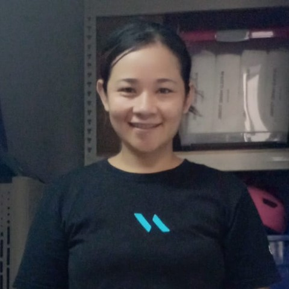

Indonesian · 38 · Eldercare, after-school care & cooking
The after-school hours are what she does. A primary-school boy home from school, his homework, and the family’s dinner on the table. She cooks Chinese home food — steamed fish, bak kut teh, lotus root soup with pork, chicken rice, fish porridge — and speaks English and Malay. Before Singapore she spent four years in Indonesia caring for an employer’s elderly grandmother, including the lifting, the bathing and the personal care.
Trust signals
At a glance
The essentials
Available from
Mid-October 2026, or a later start date if that suits you better. Transfer within Singapore.
What she does now
Since February 2026 — fetching a primary-school boy from school, keeping him until his parents were home, and cooking his dinner. She was doing it right up until the family moved house last month.
Children she has cared for
Primary-school age upward — a boy of six and a child of nine now; before that four children aged five, nine, ten and twelve. Her paid work has been with school-age children, but she is comfortable with younger ones and happy to take them.
Cooking
Steamed fish, stewed pork, bak kut teh, lotus root soup, fish porridge, chicken rice and nasi goreng. She cooks pork although she does not eat it.
Eldercare
Four years in Indonesia, employed to care for a family’s elderly grandmother — lifting and carrying her, bathing her, changing her, and cooking for her. In Singapore, four further months in a household with two elderly parents.
Why she is leaving
Her family moved out of the school estate to a smaller home, made other after-school arrangements, and no longer need much help with the house. Her employer told us this herself.
Two years in Singapore, and why each placement ended.
Before Singapore — four years in Indonesia. Employed by a family to care for their elderly grandmother, who could not manage on her own: lifting and carrying her, bathing her, changing her, and cooking for her. It sits outside her Singapore employment record, so it does not appear there.
November 2024 to August 2025 — eight and a half months. A couple with four children aged five, nine, ten and twelve, and six cats. She says the family ran into financial difficulty and could not keep her.
September 2025 to January 2026 — four months. A couple with two elderly parents and no children. Nothing she did seemed to be right, and she was not the first to find that — she was told the helper before her had lasted two weeks, and that the household changed helpers often. She left. She will talk it through on a call if you want to understand it.
February 2026 to now — eight months. A household of four. Her job has been the after-school hours: collecting their primary-school boy, keeping him until his parents were home, and cooking his dinner, with the housework around it. She was doing that until last month, when the family moved out of the school estate into a smaller home. They have arranged after-school care another way and there is little housework left, so they are releasing her. Her employer explained that to us directly.
Where she’d suit next. Two kinds of household would suit her. One is a family with an elderly parent who needs real physical help — she has done four years of exactly that, lifting, bathing and all. The other is a family with school-age children who want the after-school hours covered: the fetching, the homework, the evening meal. Dinner is the part she is most used to cooking — steamed fish, bak kut teh, lotus root soup with pork, stewed pork, fish porridge, chicken rice and nasi goreng. She speaks English and Malay. Her paid childcare has been with school-age children, though she is comfortable with babies and toddlers and would welcome them.
Her full employment history is available to interested families, with her consent.
Tell us a little about your household and we’ll be in touch within 1–2 business days. We’ll only move forward if it feels like a genuine fit.